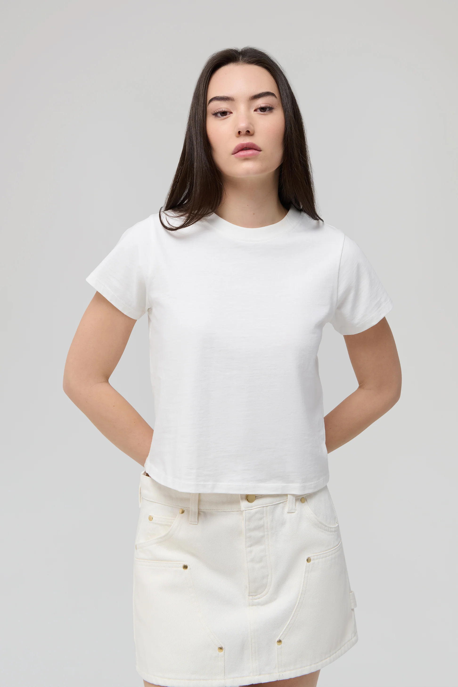
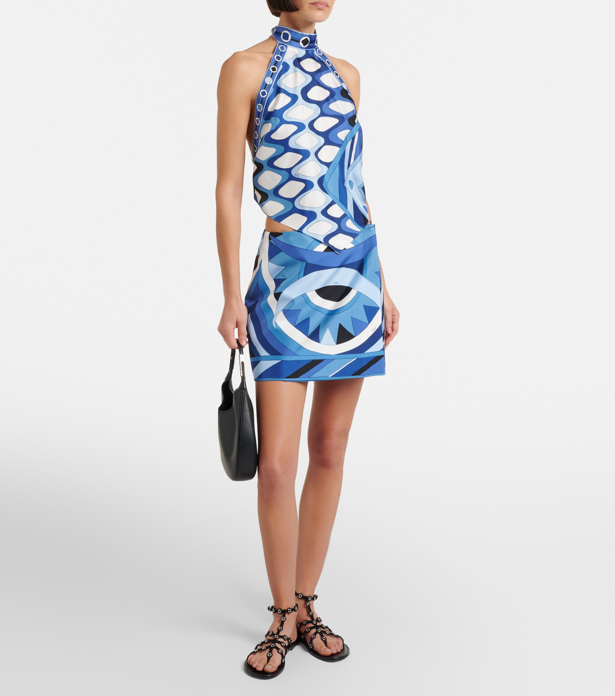
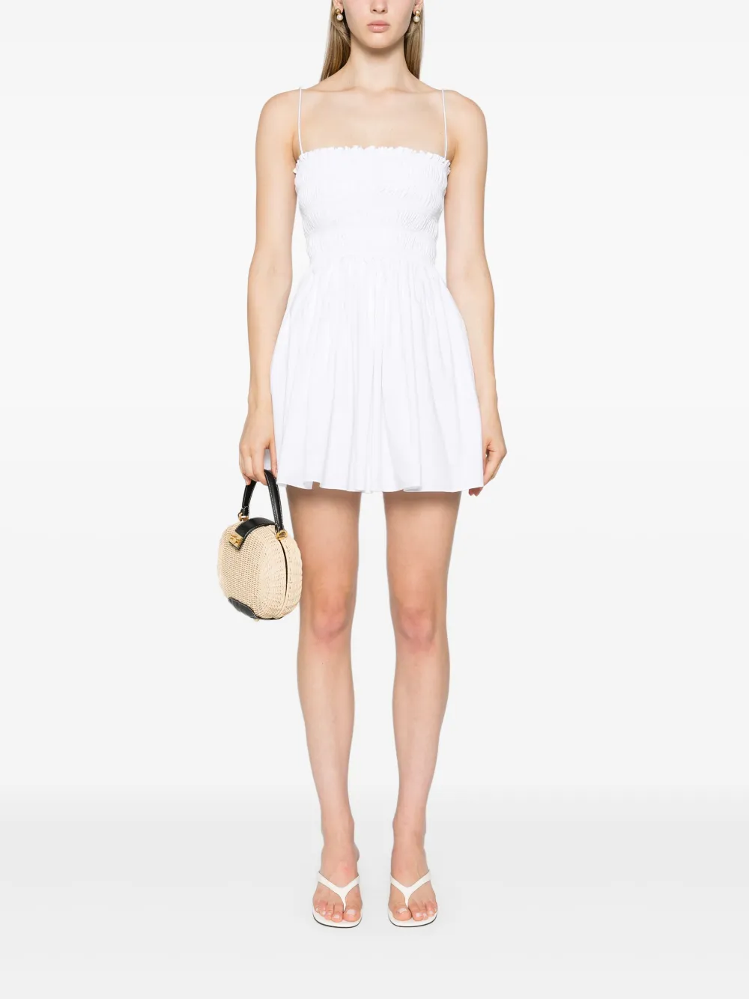
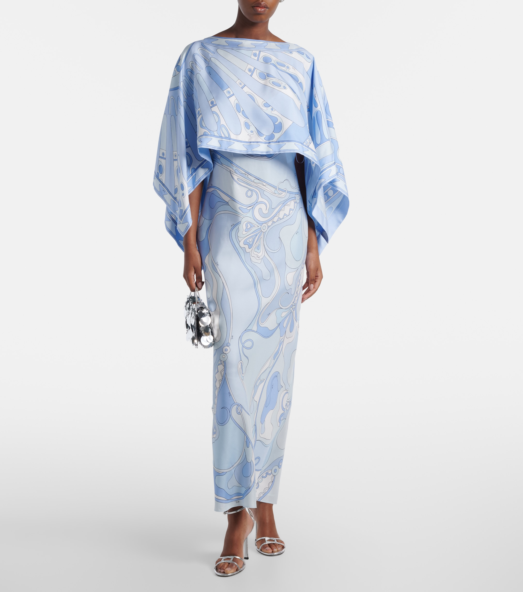
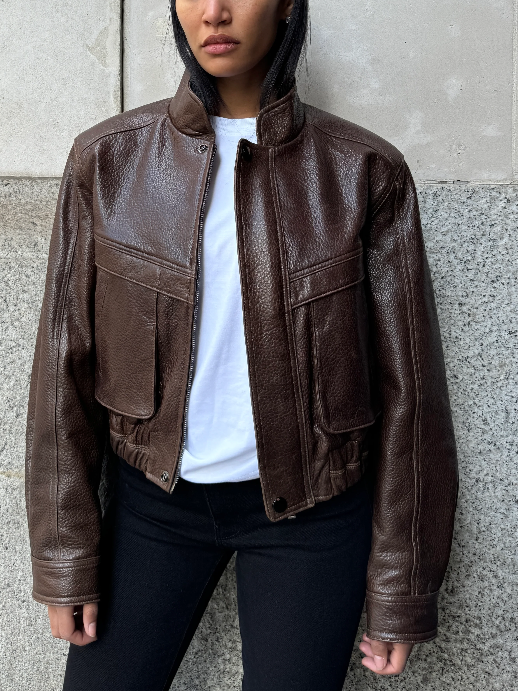
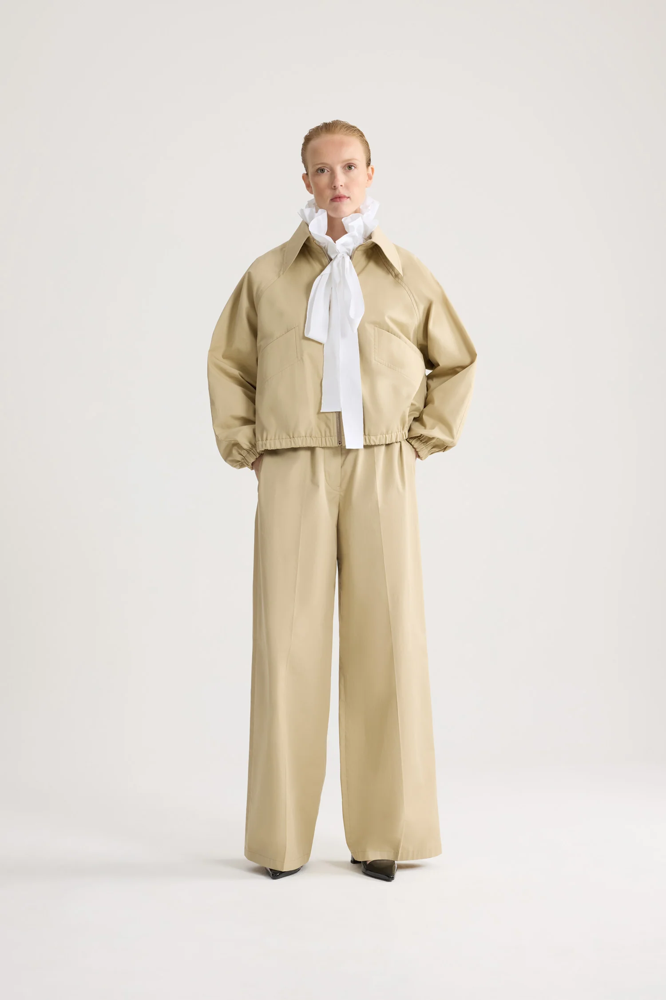
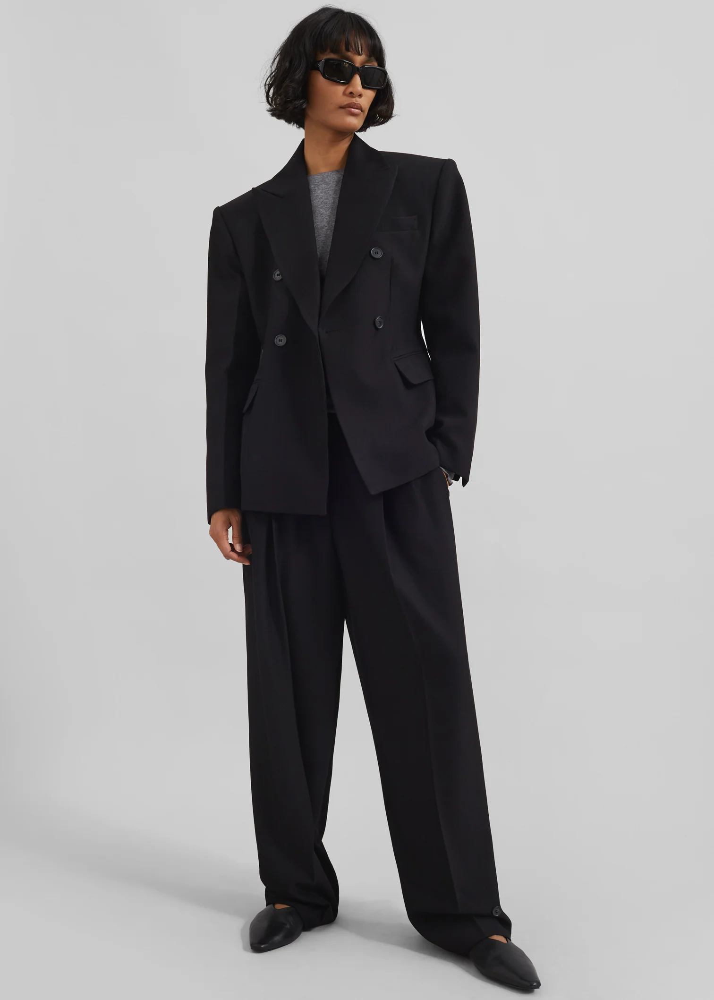

Dressing in Miami isn't like dressing anywhere else and the humidity doesn't just sit in the air — it clings, wrinkles, sweats through, and quietly ruins anything that wasn't designed for it. Which is exactly why a capsule wardrobe makes so much sense. Building it is less about minimalism and more about curating an intentional rotation of natural and breathable fabrics, versatile silhouettes, and just enough playfulness to have fun with the way you dress. Think weightless linen, fluid silk blends, structured cotton poplin — pieces that move with the climate rather than against it. In this guide, I'll walk you through how to choose those pieces, what to skip entirely, and how to put together a wardrobe that pairs perfectly with the heat, rain or shine.
Your Capsule Wardrobe Checklist -
At a glance, I think a capsule collection should contain something casual, something formal, and something fun. Each of these can be mixed with one another or kept together, but shopping with these in mind creates the ultimate wardrobe for maximum versatility and endless possibilities. As you shop, keep the checklist in mind to make sure you cover all your bases.
- 3 Tops (1 casual, 1 formal, 1 fun)
- 3 Bottoms (1 casual, 1 formal, 1 fun)
- 3 Dresses (1 casual, 1 formal, 1 fun)
- 3 Outwear (1 casual, 1 formal, 1 fun)
- 3 Shoes (1 casual, 1 formal, 1 fun)
- 3 Bags (1 casual, 1 formal, 1 fun)
- 3 Accessories (1 casual, 1 formal, 1 fun)
My Picks:










Tops
Arguably the start to any outfit, your top can really set the tone for your look, just like it can for your capsule wardrobe. You need something versatile enough that if needed, it can go from day to night, pool to party, and coffee to cocktails. Start with a basic tee made from 100% cotton. You can wear this with virtually everything, dress it up or down, and the breathable cotton will be much more forgiving during the day than viscose, or another synthetic material. The Renggli Crop Tee, Venroy Baby Tee, and Magda Butrym Side Knot Draped Tee are some of my faves, but choose something you look forward to wearing, whether thats cropped, v-neck, or boat-neck.


Renggli Crop, $120 | Venroy Baby Tee, $80 | Magda Butrym Side Knot, $585
Next go for something a little more formal. Something that you can wear to a daytime event or evening date night. A sweet crotchet top like the one from Magda Butrym is just as perfect for a daytime event by the water as it is for a date night, while the silk Saint Laurent top with lace trim leans more into the sexy Miami style. For something totally timeless and versatile, the golden-champagne tank from Brunello is it.


Magda Butrym Lace Crochet, $2,050 | Saint Laurent Silk Lace, $1,090 | Brunello Cucinelli Silk, $1,200
For the last top, go for something a little more fun. This can be with color, pattern, texture, cut, or a little bit of it all. For Miami, and Summer especially, nothing fits this section better that Pucci. Their 100% silk tops are every bit playful and practical. Perfect for a day on the yacht or a sunset drink, the colors and prints are the perfect completion to your capsule tops.


Pucci Vivara, $1,085 | Pucci Angoli, $1,215 | Pucci Orchidee, $710
Bottoms
The second half of your outfit is where things can get fun. You'll need to determine your preferences and lifestyle, but I think a mix of pants, shorts, and skirts is a good way to maximize your looks. This is where linens and silks shine, but keep an open mind to cotton and even lightweight wool or cashmere for daytime and more casual wear. You can never go wrong with a good pair of jeans, and a wide leg can go from day to night, and casual to formal effortlessly simply by swapping out your top and shoes. All three options below are personal favorites. The colors are neutral and the cuts are flattering, making each one a natural choice for your capsule collection. Honorable mention to The Row Gala Pant made of 100% wool. These are my favorite pants I own and while they're made of wool, the fabric is so lightweight and breathable, they're my go-to year round, even in Miami.


Agolde Wide Leg, $335 | The Row Eglitta Low Rise, $990 | Saint Laurent 70s High-Rise, $1,230
For those extra hot days, a pair of shorts is a must. A cotton short like the ones from Loro are perfectly versatile, transitioning seamlessly from running around doing errands to lounging at the pool. If you prefer something a bit more feminine and formal, the lace trim silk shorts from Doen are a great choice, and if you prefer something a little more casual and effortless, Frame's denim short is a buy once, wear forever kind of purchase.


Loro Piana Corbin Short, $940 | Doen Silk Lace Short, $360 | Frame Denim Short, $270
When it comes to skirts, you can really go one of two ways: fun & flirty, or soft & feminine. Both are necessary parts of your collection, but for a capsule you have go with what you gravitate towards and wear most often. Personally, I love a mini skirt over a midi or maxi, so for my capsule collection I'd start looking there and opt for a softer and more feminine choice in the dresses. This way I get the best of both worlds while maximizing my styling options. And I have to admit I love a matching set. To pair with our fun Pucci tops, I've chosen two skirts that could also be worn with a tee or tank for a more effortless, thrown together look, so you're not just limited to being matchy matchy.


Pucci Silk Wrap Mini, $1,280 | Pucci Silk Mini, $1,425 | Venroy Silk Mini, $180
Dresses
For the heat and humidity in Miami, there's no better choice than a dress when done right. Whether for work, fun or somewhere in between, a dress can instantly elevate your capsule collection while offering a multitude of styling options. For daytime, opt for linens and cottons and at night go for silk. When it comes to the former, Matteau is one of my favorite places to shop. I especially love their smocked cotton dresses in both the mini and maxi versions.


Matteau Smocked Mini, $370 | Saint Laurent Crochet Mini, $2,300 | Faithfull Linen Midi, $360
If you have somewhere more elegant to be, the Pucci Orchidee Silk gown and cape set is *chefs kiss* and bonus points that you can wear the cape separately for even more looks. But if you prefer something more understated, The Row silk midi dress with lace trim is a perfectly feminine and sexy dress with infinite amount of wearability. Same goes for the Magda Butrym Halterneck mini. The linen pairs perfectly with the Miami heat and can be effortlessly worn day or night.

Pucci Silk Gown, $2,765 | Magda Butrym Halterneck Mini, $1,775 | The Row Silk Midi, $2,400
For events, date nights, and nights out, a silk mini is your best friend. Whether you prefer something a little sexy, like the Saint Laurent lace trim slip or something girly like the Chloe Silk Crepe Mini, an LFD (little fun dress) always comes in handy. And if you prefer a little color and pattern, Reformation's Opaline Silk dress, is the perfect combination of both sexy and girly.

Saint Laurent Silk Slip, $3,300 | Reformation Silk Mini, $248 | Chloe Silk Mini, $3,050
Outerwear
When chosen wisely, outerwear can as useful as your white tee. It can go from day to night, casual to formal, birthday party to first date, and on and on. This is especially true of L.Cuppini's aviator inspired Becky jacket. It's a go-to in my collection and great for nearly all occasions. Same for The Frankie Shop's cinched waist Doyer blazer. I love that while it has an effortless, slightly oversized fit, the cinched waist elevates a typically shapeless style into something chic and flattering. Patou's organic cotton zippered jacket is the perfect addition to the capsule, breathable, stylish, and ideal for Miami's warm winters and humid summers.


Patou Organic Cotton, $1,060 | GAP x Victoria Beckham Crop, $128 | Saint Laurent Cotton, $3,400


The Frankie Shop Doyer, $330 | Nour Hammour Suede Crop, $1,315 | Magda Butrym Peplum Linen, $2,530


L.Cuppini Becky, $1,185 | Phoebe Philo Crop, $2,500 | Bottega Veneta Canvas, $4,000